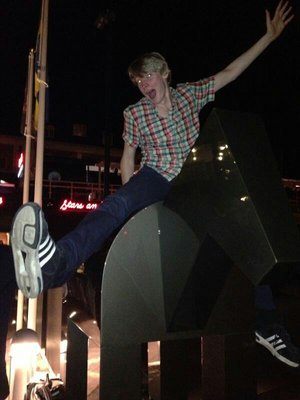

Presentation
Hej! Mitt namn är Björn Jeansson och jag läser webbprogrammerarprogrammet på Linnéuniversitetet i Kalmar.
Jag är 24 år gammal och har bott i Kalmar i nästan hela mitt liv. Jag bor nu i en etta på Stensö men växte upp i Smedby 1 mil utanför Kalmar där mina föräldrar fortfarande bor kvar. Jag läste naturvetenskap i gymnasiet för att sedan flytta till Göteborg där jag läste en kurs på Chalmers. Göteborg var dock inget för mig och jag flyttade tillbaks till Kalmar efter ett halvår. Väl hemma igen kom jag in på ekonomiutbildningen på Linnéuniversitetet men kände efter ett tag att utbildningen inte passade mig och jag behövde en paus från att studera. Jag jobbade på Telenors kundtjänst i ett år och sedan ett år som säljare i en Swedol-butik.
Efter mina två år på arbetsmarknaden var jag återigen intresserad av att börja studera. Denna gång följde jag mitt hjärta och valde ett program jag verkligen ville läsa. Eftersom jag redan är så etablerad i Kalmar var det perfekt att en utbilding till webbprogrammerare fanns så nära till hands. Jag har alltid varit fascinerad utav datorer och önskat att jag kunde göra något vettigt med dem. Jag har aldrig tidigare programmerat men tycker redan nu att det är väldigt givande.
Djur jag haft
- Katter
- Sam U.Raj
- Sessan
- Fia
- Hund
- Häst